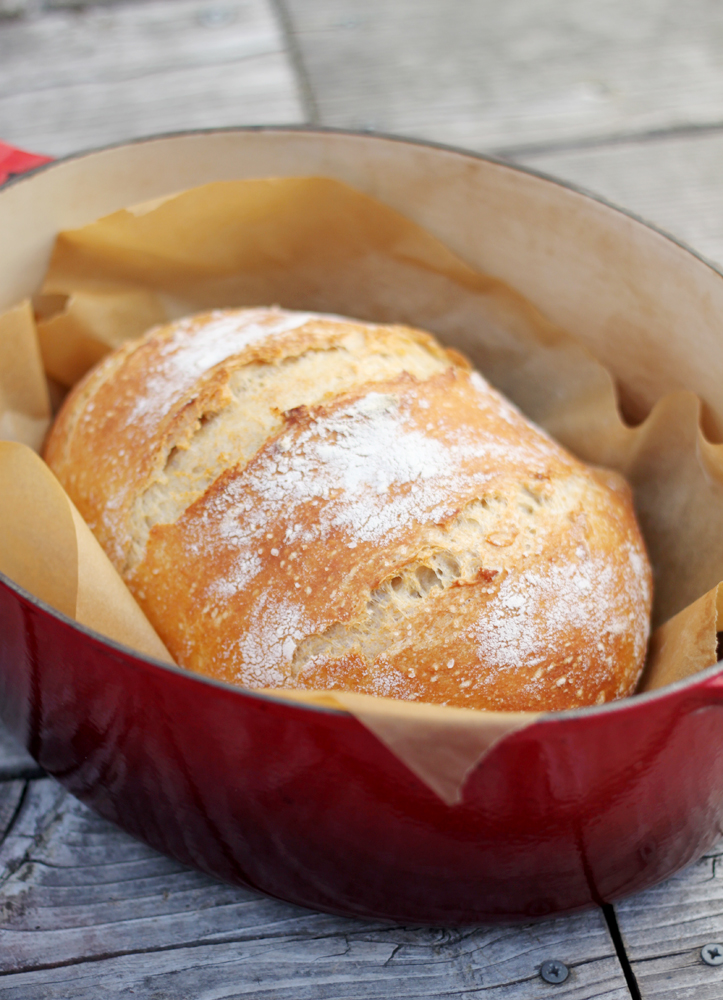
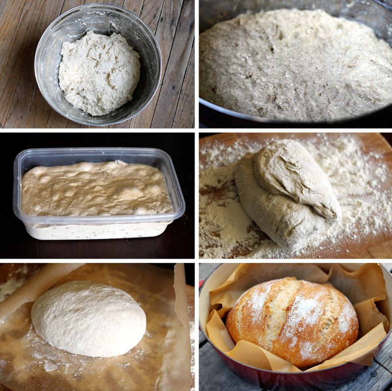

Make Bread The Easy Way

No Kneed Bread
Ingredients:
| Measurement | Ingredients |
|---|---|
| 6 cups | Flour |
| 3/4 tsp | active dry yeast |
| 2 1/2 tsp | sea salt |
| 3 1/2 cups | warm water |
| 4 TBSP | Your choice seasoning (I suggest garlic and rosemary or rasin and cinnamon) |
Directions:
- In a large bowl mix flour,yeast, salt and seasonings.
- Add warm water and combine. The dough should be really wet (if not add more water)
- Cover the bowl with plastic wrap and a dish towel and wait 3 hours for it to rise
- The dough will be dotted with holes/bubbles. You can now divide the dough into two
- Turn each half of dough into a well floured surface. Tuck its edges in to fold into a loaf shape
- Lay each loaf into a pan(cast iron dutch oven) with parchment paper underneath
- Let the dough rise another 1/2 hour
- Set your oven to 450 degrees f. Place on the bottom row of the oven a baking pan filled with water to steam the oven
- Put bread into oven with dutch oven lid on for 30 minutes
- Remove lid and bake for 15-20 minutes (knock on the bread if it sounds hollow then its ready)
- Let cool for 1 hour before cutting 
Here is a motivational playlist to listen to while baking